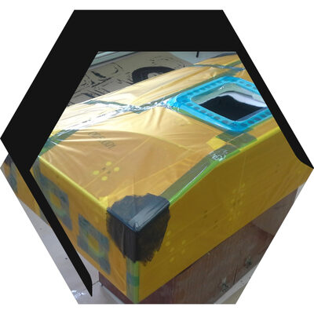

15 ноября 2025
Расширение производственных мощностей ЦАТИ
ООО «ЦАТИ» успешно завершило модернизацию производственной линии, что позволило увеличить выпуск трёхслойных сотовых панелей. Теперь компания может производить до 8 панелей в сутки стандартного размера 1250х2750 мм с толщиной от 3 до 25 миллиметров. Новое оборудование обеспечивает повышенное качество продукции и расширяет возможности изготовления панелей с арамидным сотовым наполнителем.